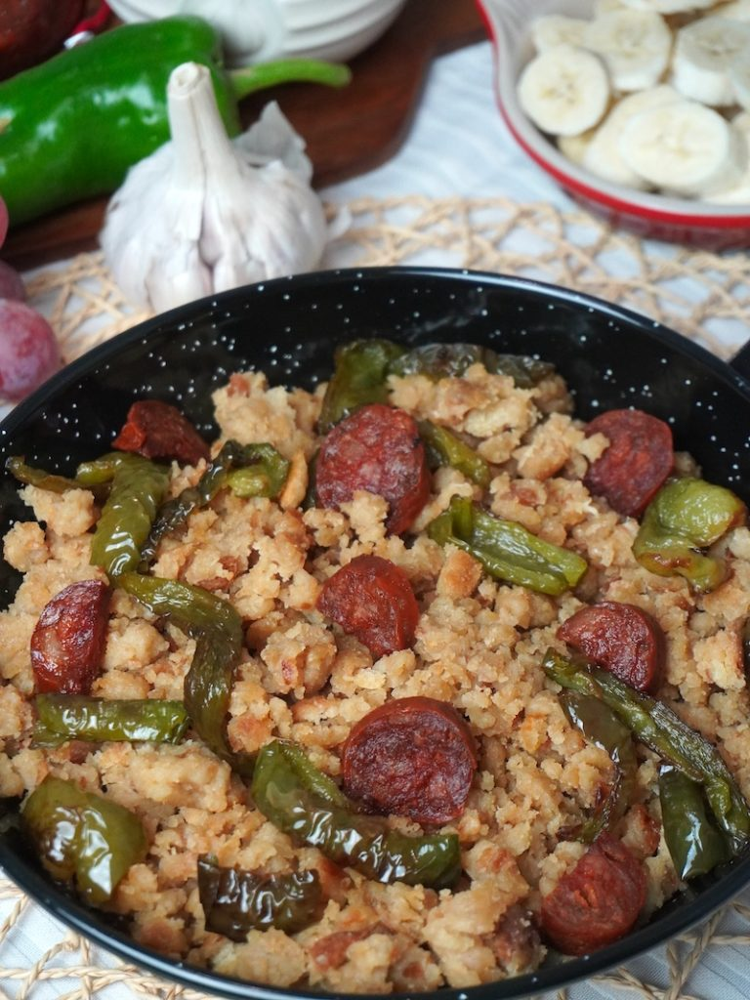

INGREDIENTES
- -1 kg. de pan del día anterior.
- -1 pimiento verde y otro rojo.
- -100 ml. de aceite de oliva.
- -200 gr. de tocino entreverado, en trocitos.
- -200 gr. de chorizo en rodajas.
- -4 dientes de ajo.
- -Sal.
- -Un poco de agua.
ELABORACIÓN
- 1. Cortar el pan en trozos pequeños
- 2. Mojarlos con un poco de agua y sal, cubrirlos con un paño y reservarlos.
- 3. Poner al fuego una sartén grande y honda con el aceite;freír los ajos pelados y cortados en lonchas y los pimientos en tiras.
- 4. Retirar y reservar. Añadir a la sartén los trozos de tocino y dejar que se frían;incorporar el chorizo en rodajas, freírlo y reservarlo.
- 5. Poner las migas en el aceite sobrante, dar unas vueltas y picarlas con la espumadera para que queden sueltas y doradas.
- 6. Mezclarlas con los pimientos, tocino, chorizo y ajos y servir inmediatamente.
Enlace a receta
PDF DE LA RECETA